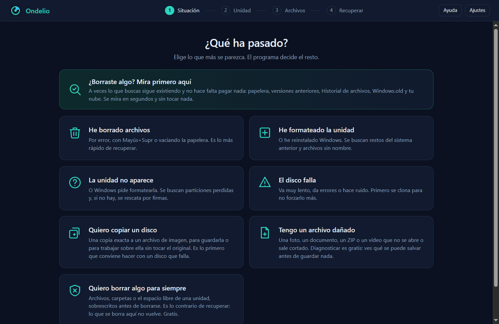
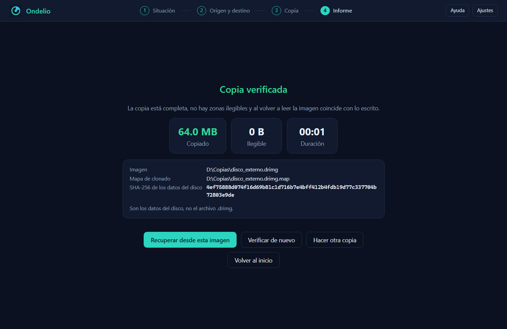

Recupera lo que creías perdido.
Ondelio busca archivos borrados en tu disco, pendrive o tarjeta de memoria, te dice con honestidad cuáles se pueden recuperar enteros y nunca escribe en el disco que estás rescatando.

Pensado para no hacer daño
Cuando pierdes archivos, lo peor es empeorarlo. Ondelio está construido con tres principios que no se negocian.
Solo lectura
El disco que analizas se abre siempre en modo de solo lectura. Lo recuperado nunca se guarda en esa misma unidad.
Sin promesas falsas
Cada archivo lleva un veredicto: íntegro, dudoso o dañado. Sabes qué esperar antes de pagar nada.
Todo en tu equipo
Ondelio no sube tus archivos a ningún sitio. El análisis, la vista previa y la recuperación ocurren en tu ordenador.
Ondelio Sense: IA local
Un pequeño modelo de inteligencia artificial, dentro del programa, reconoce de qué tipo es cada fragmento del disco para encontrar y ordenar mejor tus archivos. Funciona sin conexión, se entrenó solo con archivos públicos con licencia y no aprende de tus archivos ni los envía a ningún sitio.
Funciones
Una sola aplicación para las situaciones más habituales de pérdida de datos.
Antes de escanear, mira aquí
Muchos archivos «perdidos» siguen existiendo. En segundos, Ondelio revisa la papelera, las versiones anteriores de Windows, el Historial de archivos y tus carpetas de la nube. Restaurar desde ahí es gratis.

Recuperar archivos borrados
Borrados con Mayús+Supr, papelera vaciada, unidad formateada o partición perdida. NTFS, FAT y exFAT, con vista previa antes de recuperar y rescate por firmas de más de 20 formatos cuando ya no queda rastro del sistema de archivos.

Copiar un disco que falla
Si un disco empieza a fallar, cada lectura cuenta. Ondelio hace primero una copia exacta, salta las zonas dañadas para volver a ellas después, puede pausarse y reanudarse, y comprueba la copia con su huella SHA-256. Luego recuperas desde la copia, sin forzar el disco.

Reparar archivos dañados
Fotos JPEG y PNG, documentos de Word, Excel y PowerPoint, archivos ZIP y vídeos MP4/MOV, incluidos los vídeos del móvil que se cortaron al grabar. El diagnóstico es gratis y te dice qué se conservaría y qué no. El original nunca se modifica: siempre se guarda una copia reparada.

Borrar de forma segura
Sobrescribe archivos, carpetas o el espacio libre y lo comprueba volviendo a leerlo. Te entrega un informe de borrado y te dice con claridad cuándo un borrado no se puede verificar, como ocurre en los SSD y los pendrives.

Salud del disco y pendrives
Antes de analizar, Ondelio mirará lo que el disco cuenta de su propia salud y te avisará si conviene copiarlo primero. Y una sección propia para pendrives y tarjetas: los que piden «formatear», los de cámaras antiguas y las fotos RAW de cámara.

Modo forense
Casos y cadena de custodia, imágenes E01, línea de tiempo, rastros de Windows, búsqueda por palabras e informe pericial.
Documento sin guardar
Busca las copias que Office y Windows guardan cuando un programa se cierra sin guardar.
Ondelio Guard
Protección preventiva opcional que hace que una recuperación futura sea mucho más completa.
Copiar y borrar discos enteros
Clonar de disco a disco y borrar un disco completo, con confirmación escrita y nunca sobre el disco del sistema.
Gratis para comprobar, de pago para el resultado
Nunca cobramos por lo que evita que pierdas datos. Puedes ver qué se puede recuperar antes de pagar nada. Las compras se hacen de forma segura a través de Microsoft Store.
| Gratis | Complementos de pago |
|---|---|
| Analizar y ver la vista previa de lo que se puede recuperar | Recuperar sin límite |
| Recuperar hasta 500 MB en total, para comprobar que funciona | Guardar los archivos reparados |
| «Mira aquí»: restaurar de la papelera y versiones anteriores | Copiar de disco a disco |
| Copiar un disco a una imagen y verificarla | Borrar discos completos |
| Diagnosticar archivos dañados | Modo forense |
| Borrar archivos y espacio libre de forma segura |
Los precios se mostrarán en Microsoft Store en tu moneda, con los impuestos incluidos. Consulta las condiciones de pago y la política de reembolsos.
Lo que ningún programa puede hacer
Datos sobrescritos: si algo nuevo se guardó encima, lo anterior ya no existe.
SSD con TRIM: en la mayoría de los SSD modernos, Windows avisa al disco al borrar y este vacía esas zonas en poco tiempo. Lo borrado en un SSD normalmente no se puede recuperar. Ondelio te lo dice antes de analizar.
Consejo: deja de usar la unidad en cuanto notes la pérdida y no instales nada en ella.